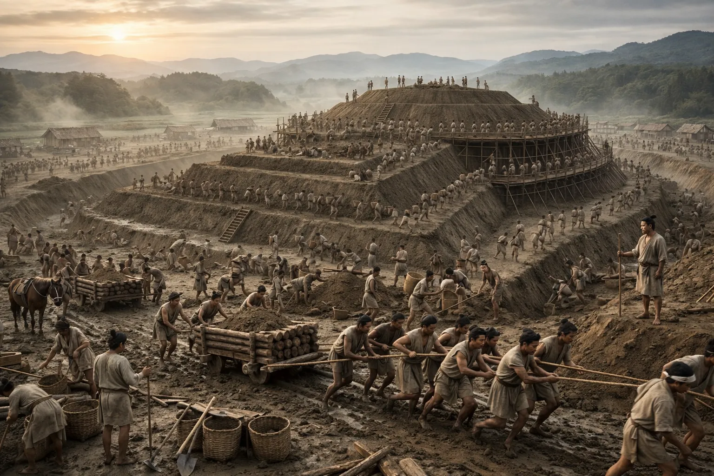
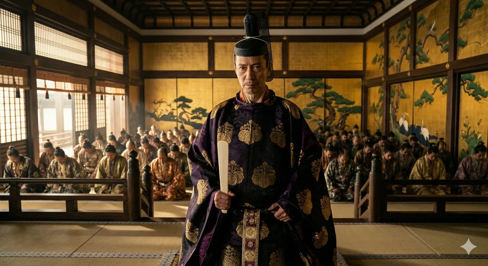
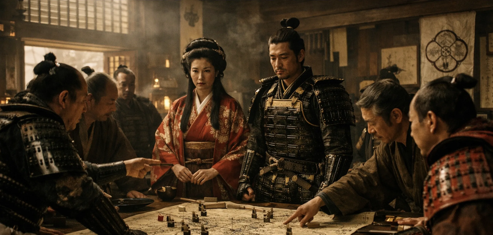
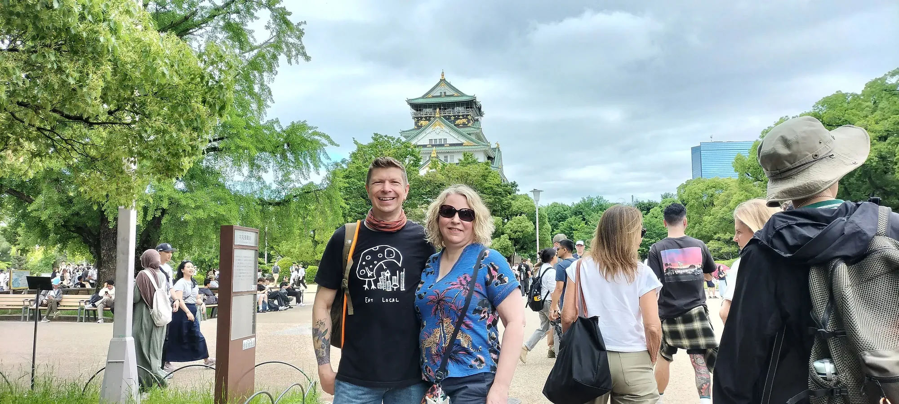
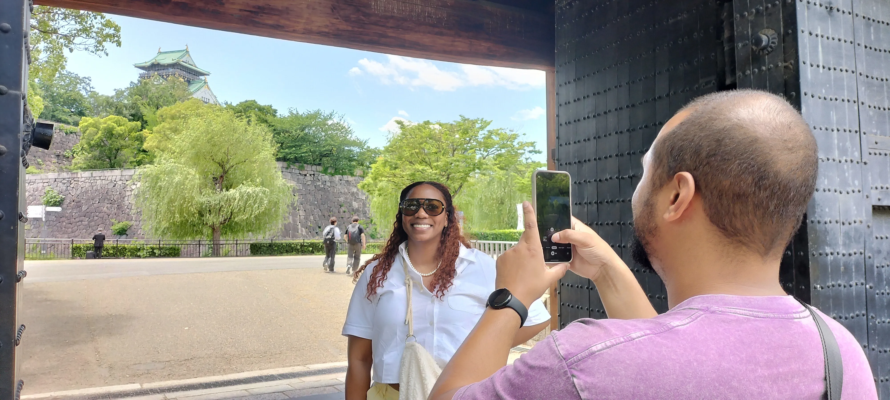
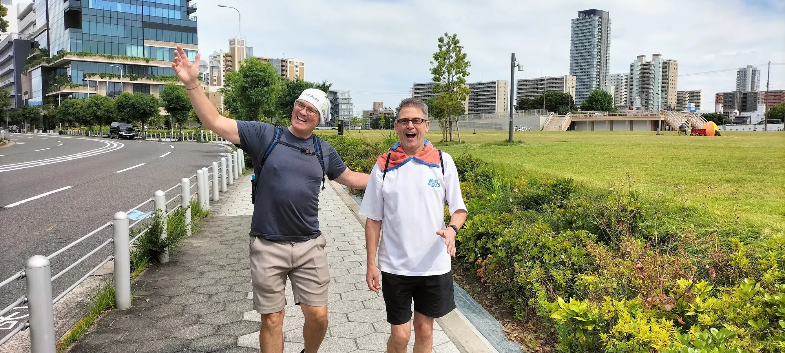

Osaka Castle Walks with Edward — History Beyond the Postcard
Osaka Castle Park Tours — for people who want more than the postcard — history obsessives, Shogun fans, mystery fanatics, and anyone fascinated by the women who shaped Japan.
The castle is only the latest chapter.
Explore the landscape ↓
Walk with Edward across the landscape where ancient emperors ruled, warriors built fortresses, and Japan's identity took shape.
Visitor Insights
Real reactions from people who walked the ground with a historian.
Choose Your Investigation
Personally led by Edward Iftody • One historian. Six guests. One investigation.

An Osaka Castle Park tour for hard-core historians who want to separate facts from myth and ancient propaganda.
Most Osaka Castle tours start in the 1500s. This one starts before Japan had a name — because the castle only makes sense once you've stood where it all began.

An Osaka Castle Park tour for Shogun-series fans looking for accurate, accessible history.
Warrior monks fortified it. A peasant rebuilt it. A shogun buried it. Walk the remains of three fortresses, each one burying the last. Discover why Osaka became home to Japan’s most powerful castle.

An Osaka Castle Park tour for true-crime lovers looking for modern interpretations of Osaka's greatest mysteries.
Hideyori is dead. His mother too. The Shogun says it was suicide — the evidence disagrees. Investigate the scene with a Resident Historian and leave knowing the real reason Osaka Castle had to fall.
An Osaka Castle Park tour for history fans looking for a focus on Japan's most influential historical women.
Five women. Two thousand years. Each rises to absolute power—divine, political, or cultural. Walk the ground where their stories unfolded and discover Japan from an untold perspective.
Undecided Investigators Wanted.
You tell me what brought you to Japan and what you already know about Osaka Castle. I'll build the investigation around your curiosity — no script, no predetermined route.
The Ground
The Stops
Choose Your Investigation
Personally led by Edward Iftody • One historian. Six guests. One investigation.
An Osaka Castle Park tour for hard-core historians who want to separate facts from myth and ancient propaganda.
Most Osaka Castle tours start in the 1500s. This one starts before Japan had a name — because the castle only makes sense once you've stood where it all began.
An Osaka Castle Park tour for Shogun-series fans looking for accurate, accessible history.
Warrior monks fortified it. A peasant rebuilt it. A shogun buried it. Walk the remains of three fortresses, each one burying the last. Discover why Osaka became home to Japan’s most powerful castle.
An Osaka Castle Park tour for true-crime lovers looking for modern interpretations of Osaka's greatest mysteries.
Hideyori is dead. His mother too. The Shogun says it was suicide — the evidence disagrees. Investigate the scene with a Resident Historian and leave knowing the real reason Osaka Castle had to fall.
An Osaka Castle Park tour for history fans looking for a focus on Japan's most influential historical women.
Five women. Two thousand years. Each rises to absolute power—divine, political, or cultural. Walk the ground where their stories unfolded and discover Japan from an untold perspective.
Undecided Investigators Wanted.
You tell me what brought you to Japan and what you already know about Osaka Castle. I'll build the investigation around your curiosity — no script, no predetermined route.
Last updated: September 2026
Edward Iftody — Osaka Castle’s Resident Historian



Clarifications
Osaka Castle’s grounds hold over 7,000 years of layered history—far too much to compress into a single walk without falling back on a generic overview. Instead, each tour approaches the same landscape through a distinct historical lens: ancient state formation, the rise and fall of foes and fortresses, a political cold-case mystery, the women who wielded power, and a custom investigation shaped by your curiosity. Every route connects these local events to the broader story of how Osaka shaped Japanese society and culture.
Most castle visits stop at the gift shop and the concrete reconstruction. Our walks are different. We treat the landscape as an active archaeological site. Using primary sources and physical evidence, we look past the modern concrete to reconstruct the lost fortresses, political battlefields, and human dramas that shaped early Japan. Designed to separate reality from myth, this is an active, intellectual investigation rather than a memorized script, continuously updated with the latest archeological discoveries.
Every tour is designed and led personally by Edward Iftody, a resident historian who lives just steps from the castle grounds. Edward specializes in early Japanese state formation, ancient geography, and the political lives of the men and women who built Osaka. You get direct access to an expert who spends his days researching the very ground you're walking on.
Every tour is designed and led personally by Edward Iftody, a resident historian who lives beside the castle, and groups are capped at six guests. The walks treat the landscape as an active archaeological site rather than a reconstructed attraction. Reviews call them a tour de force, and travelers use them to go beyond the postcard and understand the real history beneath Osaka Castle.
Yes. Groups are capped at six guests and the pace is relaxed, so solo travelers and couples get a personal, conversational experience with a historian. The private women-of-power tour is especially popular with couples, and every tour is a private or small-group experience rather than a large-bus tour.
I like keeping things highly flexible, and comfortable. I offer three distinct 150-minute investigative routes. All of my walks begin at an easy-to-find meeting point in Tanimachi (just two minutes from the subway station) and cover less than one kilometer of walking. We move at a relaxed, conversational pace with plenty of time for questions and photos.